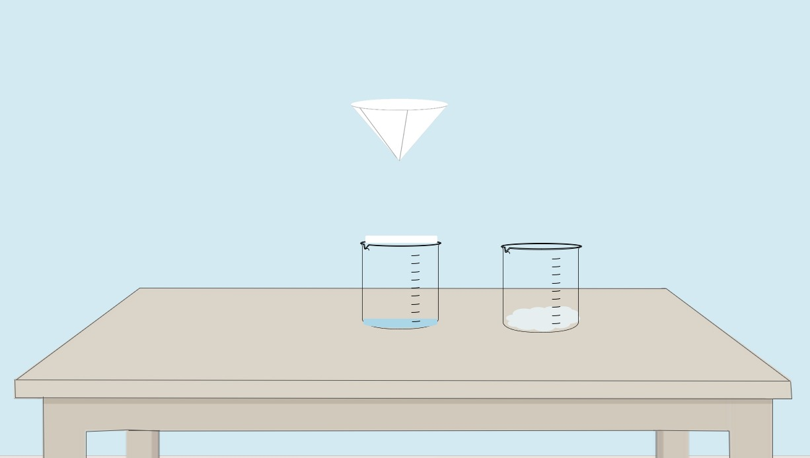

Determination of Silicon Dioxide
Step 3: Filtration
About this step:
In this step, we will filter the dried residue to separate the insoluble silicon dioxide from any remaining soluble compounds, and then wash it thoroughly with distilled water.
The filtration process separates the solid SiO₂ that formed during evaporation from any soluble salts or other compounds that may have crystallized. The silicon dioxide remains as an insoluble residue on the filter paper.
Click on the filter funnel to begin the filtration process of the silicon dioxide residue.



👇